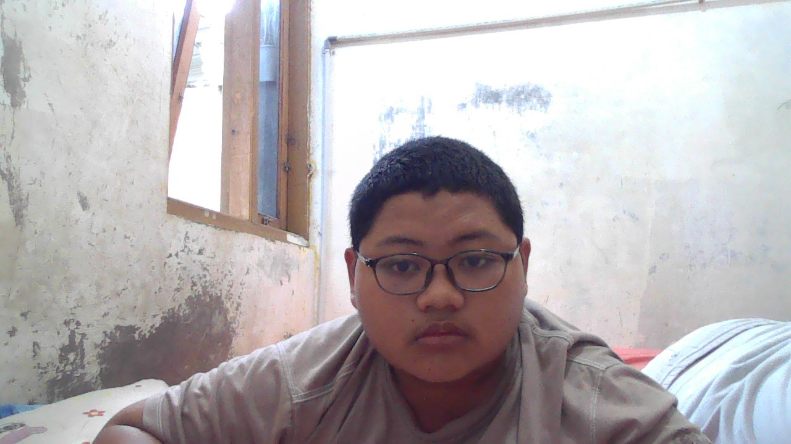

Namaku Dirada Alif Saindeva, aku lahir di Temanggung pada tanggal 9 Mei 2007.
Aku bersekolah Di SMK N 8 Semarang, di kelas 11 PPLG 3.
Aku punya dua adik, satu laki-laki, dan satunya lagi perempuan.
nama mereka yaitu:
Hobiku membaca buku, jenis-jenis buku yang kusuka antara lain yaitu:
| Nama | kelas | no. absen | umur | tempat tanggal lahir | hobi |
|---|---|---|---|---|---|
| Dirada Alif Saindeva | X PPLG 3 | 09 | 15 tahun | Temanggung, 9 Mei 2007 | membaca |